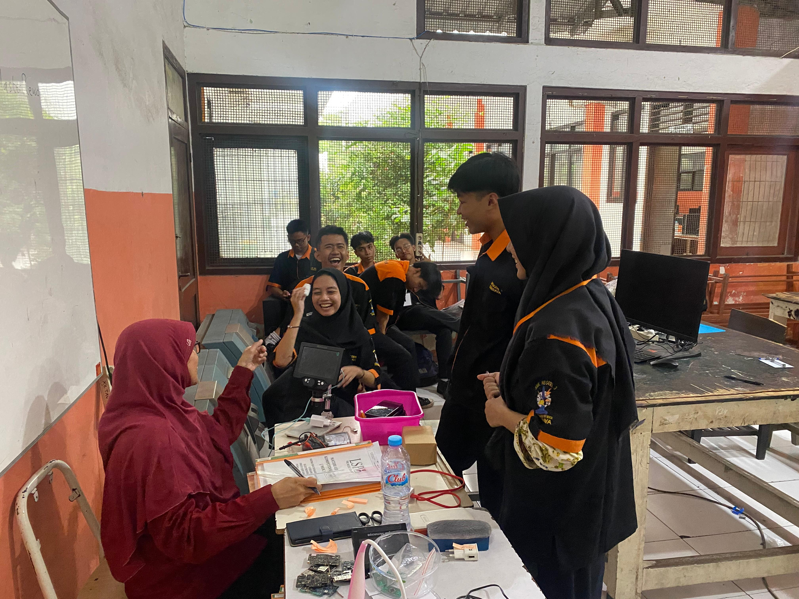

Portal pembelajaran digital untuk siswa jurusan TAV kelas 10. Tingkatkan keterampilan dan pengetahuan elektronika Anda melalui materi, video pembelajaran, dan asesmen interaktif.
Mulai Belajar Panduan PenggunaanAkses materi pembelajaran kurikulum TAV.
Tonton video tutorial praktik dan teori yang memudahkan pemahaman konsep elektronika.
Uji pemahaman Anda melalui Tugas.
Ruang diskusi real-time antara siswa dan guru. Login terlebih dahulu untuk mulai berdiskusi.

Jurusan Teknik Audio Video (TAV) SMKN 3 Surabaya merupakan program pendidikan yang berfokus pada pengembangan keterampilan di bidang elektronika, audio, dan video. Lulusan TAV dibekali dengan kemampuan untuk merancang, merakit, dan memperbaiki perangkat elektronik.
Didukung oleh tenaga pengajar yang berpengalaman dan fasilitas laboratorium yang lengkap, kami berkomitmen untuk menghasilkan teknisi yang kompeten dan siap kerja di industri elektronika.
Visi kami adalah menjadi pusat pendidikan vokasi unggul yang menghasilkan teknisi profesional di bidang audio video yang berdaya saing global.
Portal ini dikembangkan oleh Abdul Hakim Afrizal mahasiswa tingkat akhir Program Studi S1 Pendidikan Teknik Elektro, Universitas Negeri Surabaya. Dibangun sebagai bentuk kontribusi nyata dalam dunia pendidikan vokasi, khususnya untuk mendukung proses belajar mengajar siswa jurusan Teknik Audio Video SMKN 3 Surabaya melalui pemanfaatan teknologi digital.
Pengembangan portal ini juga menjadi bagian dari perjalanan akademik dan penelitian penulis di bidang media pembelajaran berbasis web, dengan harapan dapat memberikan pengalaman belajar yang lebih interaktif dan mudah diakses oleh siswa.